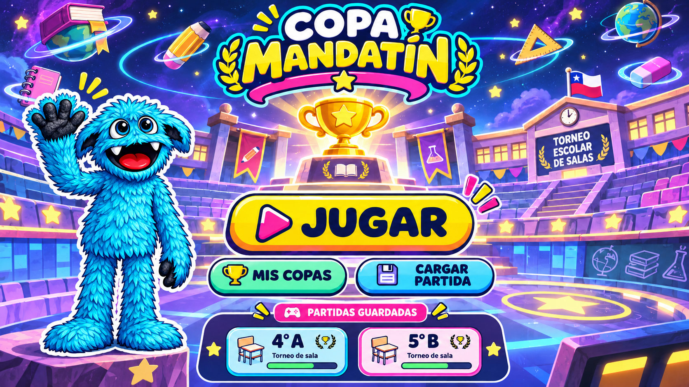
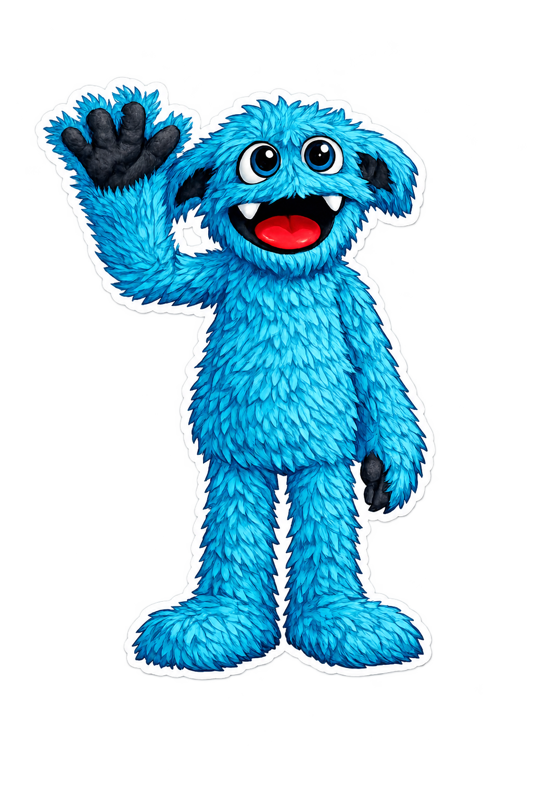

Tus torneos esperan aquí para continuar en la próxima clase.
UN CURSO. MUCHOS TALENTOS.¡Que comience
¡Que comience
la Copa Mandatín!
Arma las parejas, juega un desafío y descubre quién avanza.
Mandatín pone la fiesta. Ustedes, la energía.
1 Sube tu curso→2 Jueguen→3 Celebren
✦✳¡Aquí todos suman!🏆TU PRÓXIMO GRAN MOMENTO

01
¿Quiénes juegan?
De 2 a 64 participantes. También pueden ser equipos.
↥Sube la lista de tu cursoArchivo .txt o .csv · un nombre por fila
02
Dale tu toque
Todo listo para un gran encuentro.
✳
El azar arma las parejas.
La dinámica decide quién avanza.
Al terminar cada duelo, tú marcas al ganador.
Cada copa se guarda en este navegador. Puedes exportarla para usarla en otro dispositivo.
MANDATÍN PRESENTA
participantes duelos jugados● Guardado en este navegador
El camino a la copa ↗
Selecciona un duelo disponible para jugar · desliza para ver las rondas
✦ Pase directo: cuando el cuadro no está completo, el sorteo entrega algunos pases a la siguiente ronda.